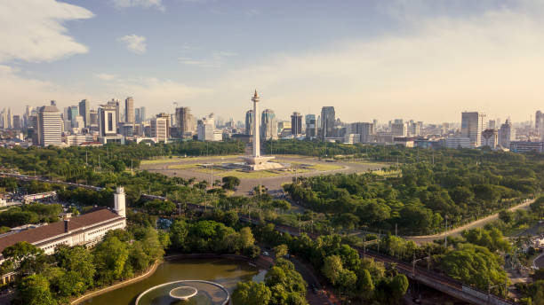
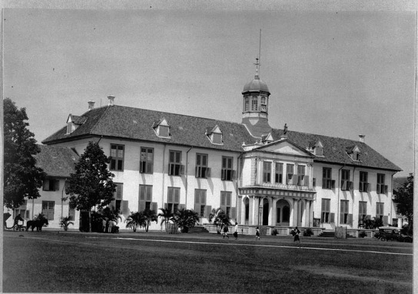

Jakarta is the capital of Indonesia. It is the nation's political, economic, and cultural heart. Formerly known as Batavia, the city also served as the capital of the Dutch East Indies. With a population of over 10 million, Jakarta is the largest city in Southeast Asia and one of the most populous urban agglomerations in the world with 30 million inhabitants in its metropolitan area. The city is extremely ethnically diverse, home to the Betawi people, the indigenous inhabitants, as well as significant populations of Javanese, Sundanese, and Chinese Indonesians. With 5 commuter lines, 4 metro lines, 1 airport rail link, and the expansive Trannjsakarta bus rapid transit system, Jakarta has the most extensive public transportation network in Indonesia.

Jakarta is one of the oldest cities in Indonesia. Founded in the 16th century as Sunda Kelapa, it served as the main port for the Sunda Kingdom. In 1527, Fatahillah, a commander from the Sultanate of Demak, successfully repelled an attack from the Portuguese, and renamed the city to "Jayakarta", Sanskrit for 'victorious deed'. In 1610, the city was conquered by the Dutch and renamed to Batavia, serving as the headquarters for the Dutch East India Company (VOC) and later the capital of the Dutch East Indies. During WW2, Japanese forces occupied the city. Following Indonesia's declaration of independence in 1945, the city was proclaimed the capital of the new republic and was renamed to Jakarta.